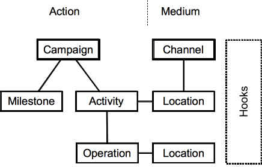
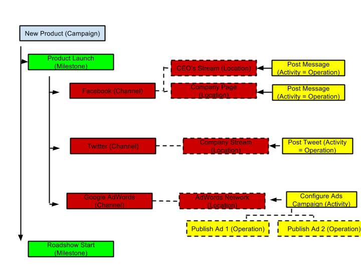

CampaignChain is open-source campaign management software to plan, execute and monitor digital marketing campaigns across multiple online communication channels, such as Twitter, Facebook, Google Analytics or third-party CMS, e-commerce and CRM tools.
For developers, CampaignChain is a platform to integrate key marketing campaign management functions with data from multiple channels. It is implemented in PHP on top of the Symfony framework.
CampaignChain covers three main areas of outbound and inbound campaign management:
Planning
Execution
Monitoring
CampaignChain’s software architecture has been designed along digital marketing terms and concepts in a specialized way, so this section gets you up to speed on CampaignChain’s terminology and explains the main entities to you.
CampaignChain knows two types of entities, a Medium and an Action, which are:
| Medium | Action |
|---|---|
|
|
Campaigns are at the core of CampaignChain, and are the “DNA of modern digital marketing”[1]. In CampaignChain, every campaign uses one or more communication channels. Campaigns also have milestones and activities.
Campaigns usually come in two variants: manually scheduled campaigns, which have a defined start and end date, and triggered campaigns (also called nurtured campaigns), which occur in response to user events. A campaign focused on a new product launch is an example of the former, whereas a drip email campaign that begins when a user fills up a registration form is an example of the latter.
Campaigns use online channels, which are the pathways by which campaign content reaches its audience. Common examples of channels include websites, blogs and social networks like Facebook and LinkedIn. For monitoring purposes, CampaignChain also allows connections to channels to retrieve traffic statistics (e.g. Google or YouTube Analytics) and lead generation data maintained in a CRM.
Every channel includes one or more locations, which allow granular publishing of campaign content. For example, a Twitter channel has only one location: the Twitter stream. However, a website channel might have various locations: a landing page, a banner on the home page, a “Contact Us” page with a form, and so on. Similarly, a LinkedIn channel might consist of two locations: a company profile page and a news stream. Locations are being created when connecting to a new Channel.
Furthermore, Locations can be created by an Operation. For example, an Operation that posts a Tweet on a Twitter stream is essentially creating a new Location (i.e. that Tweet) within a Location (i.e. a Twitter user’s stream). Learn more about Operations below.
Milestones are key events or reference points during a campaign. For example, the campaign go-live date could be a milestone, and a press tour could be a second milestone. When you set up campaign milestones, related actions can be defined. For example, you could compare analytics data between two milestones. Or you could notify a member of your marketing team to start working on the next set of tasks once a milestone has been reached.
Every location allows one or more activities which can be undertaken. For example, creating a new post is an example of an activity for a blog channel.
Every activity must always have at least one operation. For example, posting on Twitter is one activity which equals the operation.
In other cases, a single activity may encompass multiple operations. For example, defining and creating a Google AdWords campaign that runs for 3 months is a possible activity for the Google AdWords channel. However, this activity could consist of two operations: the first operation might be a Google Ad that runs for the first 2 months of the campaign, and the second operation would be a second, different Google Ad that runs for the remaining 4 weeks.
Locations are created when connecting to a new Channel or by an Operation. Upon creation by a Channel, the URL of the Location is usually known and can be stored in the system when creating the new Location. For example, when connecting a new Twitter user stream to CampaignChain, the user’s URL on Twitter will be accessible (e.g. www.twitter.com/ordnas).
This is different when it comes to Operations. An Operation could well create a Location stub without the URL and only provide the URL after the Operation has been executed. For example, the URL of a scheduled tweet will only be generated by Twitter once the tweet has been posted. Hence, CampaignChain allows Operations to create Locations without a URL, but requires them to provide a URL when the Operation gets executed.
The following diagram explains the relationship between the various entities.
It should be clear from this diagram an Activity is never related directly to a Channel. The relationship is always Channel -> Location -> Activity -> Operation.
A more concrete example of this relationship is illustrated below.
CampaignChain has been designed so that it does not require you to replace existing digital marketing applications. Instead, it serves as a platform for integrating such applications and acts as a cockpit for managing digital marketing campaigns.
Due to CampaignChain’s modules architecture, any online channel along with its locations can be integrated. Furthermore, custom campaigns, milestones, activities and operations can be developed. Given that CampaignChain is built on top of the Symfony framework, modules can use functionality provided by other modules.
Hooks are reusable components that provide common functionality and can be used across modules to configure campaigns, milestones, channels, locations, activities and operations. CampaignChain already provides a number of hooks and developers can easily add new ones.
For example, CampaignChain comes with an assignee hook, which makes it possible to assign specific channels or activities to members of a marketing team. Similarly, CampaignChain’s due date hook can be used to specify a due date for a Twitter post activity; the same hook can be reused to define a due date for a campaign milestone.
CampaignChain allows tracking Calls to Action across various Channels and Locations to understand which Operations had the highest impact. Imagine the following conversion funnel:
With CampaignChain, you will be able to understand how many leads have been generated by that specific Twitter post.
Learn more about the details of CampaignChain’s Call to Action (CTA) Tracking.
CampaignChain’s Web-based user interface has been implemented with Bootstrap 3. Thus, it is responsive and works on desktop computers as well as mobile devices such as tablets and smartphones.
| [1] | This terminology was used by Lars Trieloff in his Feb 2014 presentation, which also inspires CampaignChain’s architecture. |